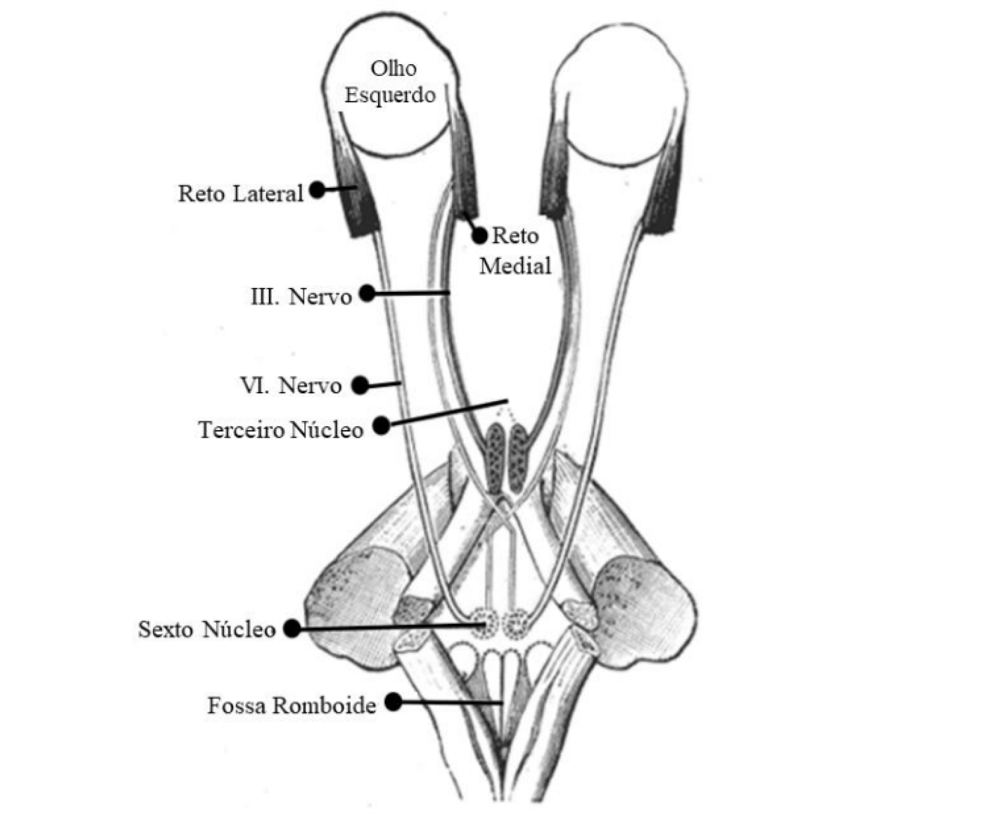

Análise de Paralisia do Sexto Nervo Óptico
Dr Fulano de Tal
MA-6666
11/09/2001
Sei la quem de nao sei das quantas
| Diagnóstico Automatizado: | Paralisia no Olho X |
| Diagnóstico Médico: | Paralisia no Olho X |
| Velocidades |
|
